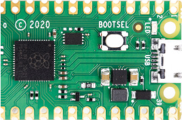

Micropython Glossary of Terms
Ampy
An obsolete MicroPython support tool created by Adafruit but no longer supported.
Check out other MicroPython tools like rshell or mpfshell for more advanced interaction with boards.
Analog to Digital Converter
A component that takes an analogue signal and changes it to a digital one.
Every ADC has two parameters, its resolution, measured in digital bits, and its channels, or how many analogue signals it can accept and convert at once.
- Also know as: ADC
Blit
A special form of copy operation; it copies a rectangular area of pixels from one framebuffer to another. It is used in MicroPython when doing drawing to a display such as an OLED display.
BOOTSEL
A button on the pico that when pressed during power up will allow you to mount the device as a USB drive. You can then drag-and-drop any uf2 image file to reset or update the runtime libraries.

- Also known as: Boot Selection
Castellated Edge
Plated through holes or vias located in the edges of a printed circuit board that make it easier to solder onto another circuit board.
The word "Castellated" means having grooves or slots on an edge and is derived from the turrets of a castle.
Dupont Connectors
Pre-made low-cost used and used to connect breadboards to hardware such as sensors and displays.
The connectors are available in male and female ends and are typically sold in lengths of 10 or 20cm. They have a with a 2.54mm (100mill) pitch so they are easy to align with our standard breadboards. They are typically sold in a ribbon of mixed colors for around $2.00 US for 40 connectors.
- Also known as: Jumper Wires
- Sample eBay Search for Jumper Wires
Formatted Strings
The ability to use a simplified syntax to format strings by added the letter "f" before the string. Values within curly braces are formatted from variables.
1 2 3 | |
returns
1 | |
Formatted string support was added to MicroPython in release 1.17
- Also known as: f-strings
- Also known as: Literal String Interpolation
- From Python Enhancement Proposal: PEP 498
- Link to Formatted Strings Docs
ESP32
A series of low-cost, low-power system on a chip microcontrollers with integrated Wi-Fi and dual-mode Bluetooth.
Typical costs for the ESP32 is are around $10 US on eBay.
- Sample on eBay $5
- Sample on Amazon $11
- Sample on Sparkfun $21
- ESP32 Quick Reference
- Sample eBay Search for ESP32 from $5 to $20
Framebuffer
A region of your microcontroller RAM that stores a bitmap image of your display.
For a 128X64 monochrome display this would be 128 * 64 = 8,192 bits or 1,024 bytes (1K). Color displays must store up to 8 bytes per color for each color (red, green and blue).
I2C
A communications protocol common in microcontroller-based systems, particularly for interfacing with sensors, memory devices and liquid crystal displays.
I2C is similar to SPI, it's a synchronous protocol because it uses a clock line.
- Also Known as: Inter-integrated Circuit
- See also: SPI
Micropython
A set of Python libraries and tools developed specifically for microcontrollers.
Micropython was originally developed by Damien George and first released in 2014. It includes many of the features of mainstream Python, while adding a range of new ones designed to take advantage of the facilities available on Raspberry Pi Pico and other microcontroller boards like the ESP32.
- See also: CircuitPython
MPG Shell
A simple micropython shell based file explorer for ESP8266 and WiPy Micropython based devices.
The shell is a helper for up/downloading files to the ESP8266 (over serial line and Websockets) and WiPy (serial line and telnet). It basically offers commands to list and upload/download files on the flash FS of the device.
OLED
Organic polymer light emitting diode.
Raspberry Pi Foundation
The company that builds the Raspberry Pi hardware and provides some software.
Raspberry Pi Pico
A microcontroller designed by the Raspberry Pi foundation for doing real-time control systems.
The Pico was introduces in 2020 with a retail list price of $4. It was a key development because it used a custom chip that had 100 times the RAM of an Arduino Nano.
Pico Pinout
The Pico pinout has

RP2040 chip
A custom chip created by the Raspberry Pi Foundation to power the Raspberry Pi Pico.
rshell
A simple micropython shell which runs on the host and uses MicroPython's raw-REPL to send python snippets to the pyboard in order to get filesystem information, and to copy files to and from MicroPython's filesystem.
It also has the ability to invoke the regular REPL, so rshell can be used as a terminal emulator as well.
Note: With rshell you can disable USB Mass Storage and still copy files into and out of your pyboard.
SPI
An interface bus commonly used to send data between microcontrollers and small peripherals such as sensors, displays and SD cards. SPI uses separate clock and data lines, along with a select line to choose the device you wish to talk to.
Also known as: Serial Peripheral Interface See also: I2C
Thonny
A lightweight Python IDE ideal for writing simple Python programs for first time users.
Thonny runs on Mac, Windows and Linux.
UF2 File
The file that must be uploaded into the Raspberry Pi Pico folder to allow it to be used.
The file name format looks like this:
rp2-pico-20210205-unstable-v1.14-8-g1f800cac3.uf2
Unicorn
MicroPython on Unicorn is completely open source Micropython emulator
- Github Repo: https://github.com/micropython/micropython-unicorn